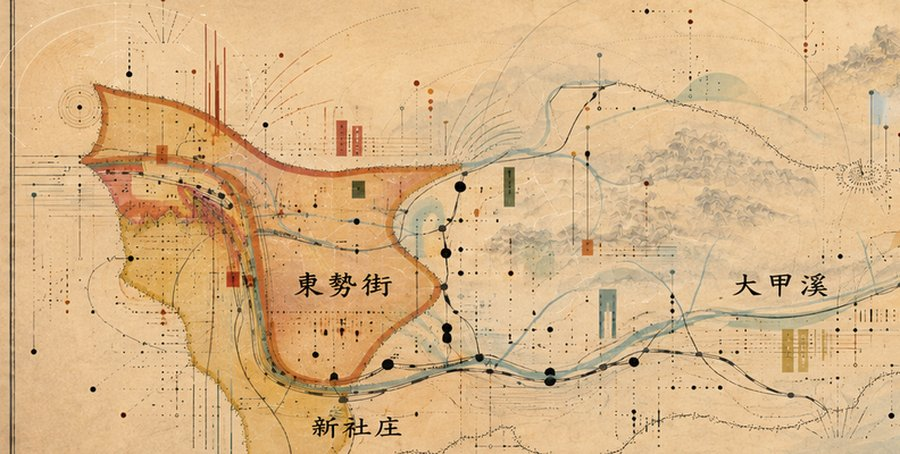
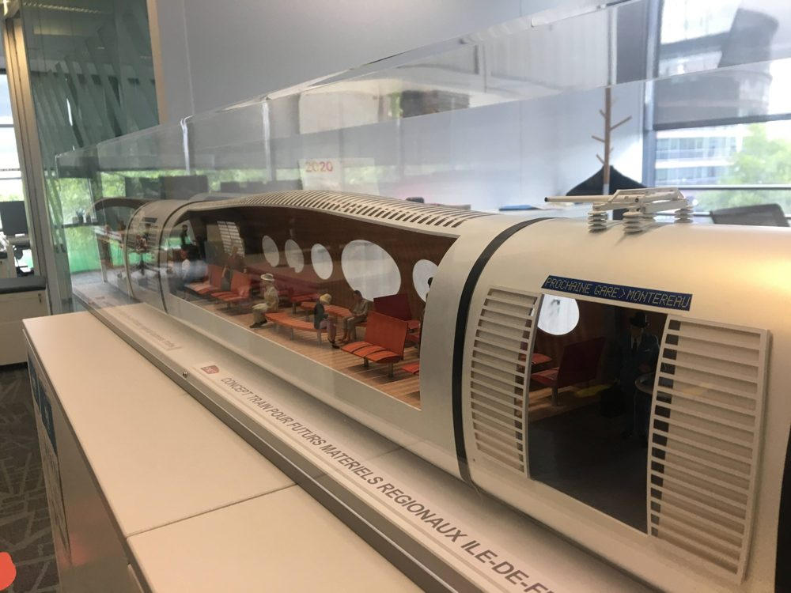

About Me
An experienced Sound Designer and Acoustic Engineer with over 5 years of experience in interactive and immersive audio design. I specialize in creating sound systems for hardware, AR/VR, and non-traditional environments. I am skilled in applying Human-Centered Design and systems-thinking to product development, and I leverage tools like Wwise to build compelling and technically robust audio experiences.
I am also the responsable of Dong Studio (咚莊頭藝術有限公司), an art company I co-founded in September 2026 with percussionist Hsiao-Tung Yuan (袁曉彤), through which we produce concerts such as Dong's Thing.
Projects Portfolio
《ping-pong-ping-pong》
2025 Nuit Blanche Taipei 台北白晝之夜
Inspired by the native Taiwanese spatterdock (Nuphar shimadae), the project draws from its local name, which sounds identical to "Ping Pong." This phonetic link bridges botanical identity with the "Ping Pong Effect"—a spatial delay used in sound design.
In this interactive installation, when the audience strikes the spherical water tanks, it triggers a physical "Ping Pong" loop. The impact is captured and translated into acoustic vibrations, creating synchronized ripple patterns on the water's surface.
It is a complete sensory cycle, merging biological heritage, linguistic play, and technical audio systems into a single immersive experience.
- Role: Sound Designer / Interactive Systems Engineer
- Exhibition: Sidewalk opposite the Taipei Fine Arts Museum, Yuanshan, Taipei

何曉玫 MeimageDance
《芭比的獨白》 Barbie's Monologue
VR Cinema Experience
In this VR film project, I was responsible for the overall sound design. Through meticulous audio processing, the sound complements Ho Hsiao-Mei's unique choreographic language, leading the audience into the private and intimate monologue space of the female interiority.
- Role: Sound Designer
- Director: MeimageDance - Ho Hsiao-Mei
Immersive VR soundscape experience.

Time-Layered Soundscape Map ｜山城流域時光聲景地圖
Web Prototype & Field Recording | Ongoing
Before a new expressway opens, the sound of the Dajia River valley between Dongshi and Shigang is about to change for good. The old railway, the waterways buried under roads and the voices of the elders now live mostly in memory. This map is my attempt to keep what is disappearing: to record it while it can still be heard, and to put each sound back in the place where it belongs.
I want these sounds to keep their original meaning, as part of how people lived here rather than material to be sampled. So the map stays under fog until you walk or ride there yourself, and the voices of the people who live here are shared only after they have listened back and agreed. The video shows the ride along the Dongfeng greenway towards Shigang, beside the new expressway. This is a prototype, and it will keep growing.
![Solarmix 3D spatial sequencer preview]()
Solarmix ｜3D Spatial Sequencer
Spatial Audio | Web Demo + Unity Version
A solar system you can listen to: each planet is a synthesized sound source placed in 3D space and rendered binaurally with HRIR convolution. Play it in your browser with headphones. A Unity version of the project is also available (see the Unity project link).
![Duck Hunt Remastered preview]()
Duck Hunt Remastered
Sound Designer | Sound Effects Demo
A playable web version of a Duck Hunt fan game by Daniel The Fox, featured here as a showcase for game sound effects. The aiming and shooting sounds are spatialised in 3D audio and mapped to the position on the screen where you aim, so you can hear where your crosshair is. Best with headphones. Not affiliated with or endorsed by Nintendo.
![Deep Sea Sharpshooter preview]()
Deep Sea Sharpshooter ｜深海神射手
Spatial Audio Game | Web Demo
A browser-based listening game in which players locate sounds in a 3D sound field over headphones, using binaural (HRTF) rendering and selectable room environments.
Data credits: head-related impulse responses from the SADIE II Database (AudioLab, University of York; Kearney, Armstrong & Thresh); room reverberation from the Aachen Impulse Response Database (RWTH Aachen; Jeub et al.); both as packaged in the Binamix library (Barry et al., UCD / Google). All rights remain with the original authors; this demo is not affiliated with or endorsed by them.
![Merry Electronics]()
Merry Electronic Health Game
Acoustic Engineer | 2025
Led the development of a patent-pending visual recognition-based rhythm game for sarcopenia.

Dong's Thing
Co-founder & Responsable, Dong Studio (咚莊頭藝術有限公司) | 2026
First concert produced by Dong Studio, the art company I co-founded with percussionist Hsiao-Tung Yuan, with a participatory sound installation controlled by grip balls alongside live flute and marimba.

Da Dong Dong ｜打冬咚
Improvisation Performer | 2025
A winter solstice (冬至) improvised sound performance during 《deledele 刪除製造所》, the joint exhibition of Huang Da-Wei (黃大維) and Hua-Yen Pan at 藝時代畫廊 (ESTYLE ART GALLERY), Taichung (Dec 2025 – Feb 2026).

Spatial Recording and Mixing ｜即興音景
Video & Sound, Dong Studio | 2025
Where rhythm meets space, a new conversation between art and community begins. This performance reimagines an existing sound installation through improvised percussion, inviting local audiences into an unfolding sonic journey. Ambisonic recording (Zoom H3-VR) at Houli Waipu Park, summer 2025, with equipment and technical support from Merry's IPD/BRD team.
Dong Studio: Hsiao-Tung Yuan (percussion), Hua-Yen Pan (video & sound)

Bogosort ｜《Bogo_sort》
Electronic Improvisation Performer | End of 2024
Closing improvisation for artist Huang Da-Wei's (黃大維) solo exhibition 《我不知道》 (I Don't Know), performed live alongside Huang Da-Wei and Ding Chi-Yu. Responding to the absence and uncertainty within the paintings through electronic sound improvisation, the piece turned "deletion" into a flowing dialogue between sound and image — extending the exhibition's core concept of deletion and creation.
My Seasonal Imprints ｜我的四季印記
Co-Creator, Sound Design | 2024
Public art piece made with artist Syu Hong-Hui and about 60 students over two months and four sessions, shown at the General Education Expo at National Formosa University (Dec 2024). Syu taught plaster plant printing and I taught sound design. Students cast campus plants in plaster; I edited their field recordings into sound clips and built a sensor-triggered playback system, with contact speakers behind the plaster panels, set inside a wall of reclaimed window frames. Syu and I collected the old windows from Tainan and Taichung and designed the wooden wall frame together. We also turned old windows into planter boxes to bring a disused sink back to life, with a solar-powered automatic misting system I installed. Thanks to the friends who helped us build it and lent the power tools.

Dialogue in Silence
Multichannel Sound Creation | 2024
A choreographic work for the dome, nominated for the 2024 FullDome Festival Jena (New Talent). I created the multichannel sound, which grew out of Étude_00, a spatial composition from a year-long IRCAM × C-LAB workshop in 2022: sorting sounds by six attributes (texture, concrete, realistic, instrumental, electronic, cyclical), then recomposing and interweaving them. A dancer who heard the piece at a concert at the Sound Art Center of Taiwan's National University of the Arts asked to use it as the score for a dome dance work. Made together with Chih-Jung Hsu, Chia-Yi Shih and Chia-Hsiang Lee.

Feel Together — Taiwan Sound Lab / C-LAB
Control Interface Design & Sound-to-Vibration Translation | 2023–2025
A cultural-equity project of the Taoyuan Bureau of Cultural Affairs, ITRI and C-LAB (Taiwan Contemporary Culture Lab), made with the Deaf theatre company Duck Studio and neuroscientist Chen-Chung Lee: a vest that lets people feel music through the body. Workshops with the company reshaped the project, and they proposed the balloon method we explored together, one person speaking or singing against a balloon while the other listens with an ear on it.
My part: the sound-to-vibration mapping in Max for Live, a control interface that drives several vibration motors with different patterns at once, and live operation. The project ended in a performance where Deaf dancers improvised from the vibrations while the audience wore vests, and toured to the National Theater & Concert Hall, the Taoyuan Iron Rose Music Festival and the National Museum of Taiwan Literature.

VR Film Indochina
Sound Designer | 2023
Binaural Spatial Audio sound design for the "Umbrella Flying" scene.

French Railway (SNCF)
Audio Branding & Alert-Tone Generator | Internship, 2020
The goal was an evacuation alarm that carries the brand: alert sounds that fit the spirit of the company rather than a generic siren. I designed the alert tones and built a parametric alert-tone generator in Max for Live and Ableton. The method rested on listening tests, a sound moodboard made with IRCAM SpeAK, and research on alarm sounds and brand expectations.
Co-authored with Guillaume Lemaitre and Claire Chaufour and presented at WCRR 2022 (Going Home Safely). The tones are in service on the rail network of the Paris region (Île-de-France).

TAG WAR ｜條碼大作戰
Sound Design | 2019
An online multiplayer shooter on Steam (developed and published by WOWWOW) in which players scan barcodes in a supermarket to grab items and tag opponents. I did the sound design for the game; the BGM was made in collaboration with Lin Yu-Ping (林育平).

Shei-Pa National Park AR Guide ｜雪霸國家公園
Music & Field Recording | 2018
My first assignment at Wowwow Lab: a soundtrack for an AR app commissioned by Shei-Pa National Park in Taiwan. The app is aimed mainly at children and their families and helps them get to know the forest and the animals of the park. Using Logic Pro, I created music blended with ambient sound that I recorded in the forest of Shei-Pa National Park, kept simple and easy to enjoy so that the public can feel close to it.

Andaluza ｜Orchestral Arrangement
Arranger | 2012
My arrangement for orchestra of Manuel de Falla's Andaluza (Four Spanish Pieces, No. 4), made for the orchestration course of my master's at National Chiao Tung University. It was also rehearsed with the Evergreen Symphony Orchestra.
Xiao & Dizi Lessons 笛・簫 線上教學 · Cours de xiao et de dizi
I teach xiao and dizi, the Chinese bamboo flutes, online with a focus on breath, tone, phrasing, ornamentation and repertoire. I have taught bamboo flute since 2002, in English and French. My background in sound design and acoustics helps me explain why a tone is airy or unstable, and how to fix it.
Beginners, wind players from other traditions, and fans of Chinese dramas, period games and East Asian culture are all welcome.

FAQ
Which language are the lessons in?
English or French. Lessons are online.
What time zone do you teach in?
I am in Taiwan (UTC+8) and can teach at almost any hour with advance booking. Tell me what works in your local time and we will arrange it week by week.
Do I need experience?
No. Lessons are adapted to your background and goals, whether you are a complete beginner or already play another wind instrument.
Where do I get a flute?
Good bamboo flutes are hard to find outside Asia and quality varies widely. I can choose one for you in Taiwan and ship it to you. We decide the key and budget together.
Do I need to read music?
No. We can work with numbered notation (jianpu), staff notation, or both.
Get In Touch
Interested in collaboration or have a project in mind? Reach out via email or phone.